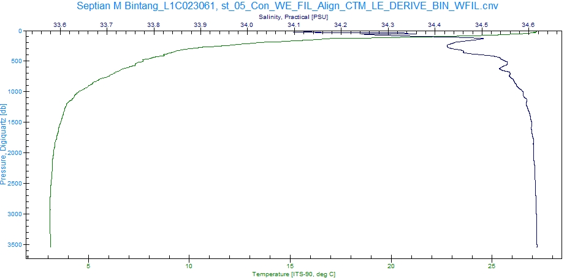

Acara 1: Align Data CTD Menggunakan SBE Data Processing

Visualisasi Data CTD Menggunakan SBE Data Processing
Berdasarkan hasil praktikum yang telah dilakukan, dapat dijelaskan bahwa semakin bertambah kedalaman air laut maka tekanan di dalam laut akan semakin besar dan suhu yang diperoleh akan semakin kecil. Pada kedalaman 0-200 meter suhu cenderung hangat dan pada kedalaman 200-1000 meter suhu mendadak turun secara drastis akibat adanya lapisan termoklin. Hal ini sesuai referensi bahwa tekanan di dalam laut akan bertambah dengan bertambahnya kedalaman. Sebuah parsel air yang bergerak dari satu level tekanan ke level tekanan yang lain akan mengalami penekanan (kompresi) atau pengembangan (ekspansi). Jika parsel air mengalamai penekanan secara adiabatis (tanpa terjadi pertukaran energi panas), maka temperaturnya akan bertambah. Sebaliknya, jika parsel air mengalami pengembangan (juga secara adiabatis), maka temperaturnya akan berkurang (Setyanto, 2019).
Acara 2: Bin Average CTD Menggunakan SBE Data Processing

Sebelum Denoising
Setelah Denoising
Berdasarkan hasil praktikum yang telah dilakukan, dapat dijelaskan bahwa semakin bertambah kedalaman air laut maka tekanan di dalam laut akan semakin besar dan suhu yang diperoleh akan semakin kecil. Namun, dapat dilihat terjadi perbedaan yang cukup signifikan antara suhu dan salinitas. Pada grafik warna hijau pada kedalaman 200-1000 meter suhu mendadak turun secara drastis akibat adanya lapisan termoklin dan pada kedalaman 1500-3500 meter suhu stabil berkisar pada 3-4 ºC. Pada grafik warna biru tua menunjukan pada kedalaman 0-500 meter mempunyai nilai salinitas berkisar 33.8-34.5 PSU sedangkan pada kedalaman 1000-3500 meter mempunyai nilai salinitas berkisar 34.5-34.6 PSU.
Acara 3: Visualisasi Data CTD Menggunakan SBE Data Processing, Microsoft Excel. dan ODV

Diagram T-S di Perairan Maluku
Berdasarkan hasil praktikum yang telah dilakukan, dapat dijelaskan bahwa data diagram T-S Perairan Maluku yang diambil pada 5 September 2022 menunjukan temperatur potensial berkisar antara 5°C - 30°C. Salinitasnya menunjukkan antara 34.6 – 34.9 PSU dan densitas airnya berkisar antara 22-27 kg/m3. Data menunjukkan pada densitas 23 kg/m3 memiliki temperatur potensial sebesar 25°C dan salinitasnya 34.8-34.9 PSU dan pada densitas 26 kg/m3 memiliki temperatur potensial sebesar 13°C dan salinitasnya berkisar 34.6 PSU. Namun pada suhu 28°C terjadi penurunan yang signifikan pada salinitas sebesar 34.85 PSU setelah pada suhu 13°C dengan salinitas 34.6 PSU. Dari data yang diperoleh pada Perairan Maluku, hubungan suhu dan salinitas dalam Perairan Maluku menunjukan bahwa semakin tinggi suhu maka berbanding lurus, yaitu semakin tinggi salinitas.
Acara 4: Visualisasi Data Nutrien Terhadap Suhu, Salinitas, dan Oksigen
Hubungan Nitrat Terhadap Suhu
Berdasarkan hasil praktikum yang telah dilakukan, dapat dijelaskan bahwa data diagram T-S Perairan Maluku yang diambil pada 5 September 2022 menunjukan temperatur potensial berkisar antara 5°C - 30°C. Salinitasnya menunjukkan antara 34.6 – 34.9 PSU dan densitas airnya berkisar antara 22-27 kg/m3. Data menunjukkan pada densitas 23 kg/m3 memiliki temperatur potensial sebesar 25°C dan salinitasnya 34.8-34.9 PSU dan pada densitas 26 kg/m3 memiliki temperatur potensial sebesar 13°C dan salinitasnya berkisar 34.6 PSU. Namun pada suhu 28°C terjadi penurunan yang signifikan pada salinitas sebesar 34.85 PSU setelah pada suhu 13°C dengan salinitas 34.6 PSU. Dari data yang diperoleh pada Perairan Maluku, hubungan suhu dan salinitas dalam Perairan Maluku menunjukan bahwa semakin tinggi suhu maka berbanding lurus, yaitu semakin tinggi salinitas.
Hubungan Nitrat Terhadap Salinitas
Berdasarkan hasil praktikum yang telah dilakukan, grafik diatas menunjukan parameter kedalaman berkisar 0 - 6000 meter, salinitas berkisar 34.6 – 35.2 PSU, dan kandungan nitrat berkisar 20 - 30 mg/L. Pada kedalaman 500 – 1000 meter terlihat kandungan nitrat memiliki nilai 25 mg/L dan salinitas perairan berkisar 34.6 – 34.9 PSU. Sedangkan pada kedalaman 1500 – 2000 meter terlihat kandungan nitrat memiliki nilai 30 mg/L dan salinitas perairan berkisar 34.7 – 34.75 PSU. Hal ini dapat disimpulkan bahwa salinitas dan nitrat memiliki hubungan yang berbanding terbalik karena semakin dalam perairan maka semakin rendah salinitasnya, sedangkan pada nitrat semakin dalam perairan maka semakin tinggi kadar nitratnya.
Hubungan Nitrat Terhadap Oksigen
Berdasarkan hasil praktikum yang telah dilakukan, grafik diatas menunjukan parameter kedalaman berkisar 0 - 6000 meter, oksigen berkisar 50 – 250 ppm, dan kandungan nitrat berkisar 20 - 30 mg/L. Pada kedalaman 500 – 1000 meter terlihat kandungan nitrat memiliki nilai 25 mg/L dan oksigen perairan berkisar 150 ppm.
Acara 5: Visualisasi Diagram T-S

Diagram T-S
Berdasarkan hasil praktikum yang telah dilakukan, dapat dijelaskan bahwa data diagram T-S Samudra Pasifik menunjukan stasiun 1 garis berwarna biru dan stasiun 2 garis berwarna merah. Temperatur potensial berkisar antara 0°C-30°C. Salinitasnya menunjukkan antara 34.2–35.2 PSU dan densitas airnya berkisar antara 22-27 kg/m3. Data menunjukkan nilai densitas 22-24 kg/m3 pada stasiun 1 memiliki penurunan temperatur potensial dari nilai tertinggi sebesar 25-28°C dan turun menjadi 20-23°C serta salinitasnya mengalami kenaikan dari 34.7 PSU menjadi 35.1 PSU, sedangkan nilai densitas 23-24 kg/m3 pada stasiun 2 memiliki temperatur potensial sebesar 20-25°C dan salinitasnya berkisar 34.8-35 PSU. Namun, pada densitas 22-27 kg/m3 di stasiun 1 dan 2 terjadi penurunan yang signifikan pada temperatur potensial tertinggi sebesar 20°C dan turun pada suhu terendah sebesar 5°C dengan salinitas yang mengalami penurunan yang signifikan juga dari 35.1 PSU menjadi 34.1 PSU. Dari data yang diperoleh pada Samudra Pasifik, hubungan suhu dan salinitas dalam Samudra Pasifik menunjukan bahwa semakin tinggi suhu maka berbanding lurus, yaitu semakin tinggi salinitas.
Acara 6: Diagram T-S Terhadap Nitrat, Fosfat, dan Oksigen

Diagram T-S Terhadap Fosfat di Samudra Pasifik
Diagram Temperatur – Salinitas menggambarkan aliran dan massa suatu badan air. Menurut Harvianto, et al., 2015, perubahan diagram T-S bergantung pada faktor-faktor seperti aliran air, topografi, suhu, salinitas, tekanan yang bekerja pada badan air, dan faktor geografis. Menurut Mali, et al., 2022, Temperatur dan salinitas memiliki peran yang sangat penting untuk mengetahui kondisi perairan. Temperatur menjadi parameter reaksi kimia dan proses biologi sehingga temperatur merupakan variabel yang penting. Salinitas juga menjadi faktor penting penyebaran organisme perairan laut. Pada gambar 1 menunjukan salinitas pada sumbu X yang memiliki nilai 33 - 35 PSU dan potensial temperatur pada sumbu Y yang memiliki nilai 0°C - 30°C, dan densitas pada grafik tersebut menunjukan angka berkisar 19 – 28 kg/m3.

Diagram T-S Terhadap Oksigen di Samudra Pasifik
Berdasarkan hasil praktikum yang telah dilakukan, grafik diatas menunjukan parameter potensial suhu berkisar 0°C - 30°C, oksigen berkisar 50 – 250 ppm, densitas berkisar 19 – 28 kg/m3, dan kandungan salinitas berkisar 33 - 35 PSU. Pada potensial suhu 10°C - 30°C dan nilai salinitas 33 - 35 PSU terlihat kandungan oksigen di Perairan Samudra Pasifik memiliki nilai tertinggi, yaitu 150 – 200 ppm pada densitas 20 – 25 kg/m3, sedangkan pada potensial suhu 0°C - 10°C dan nilai salinitas 34 - 35 PSU terlihat kandungan oksigennya menurun yang memiliki nilai tertendah, yaitu 50 – 100 ppm pada densitas 25 – 28 kg/m3. Hal ini dapat disimpulkan bahwa suhu dan oksigen memiliki hubungan yang berbanding lurus karena semakin tinggi suhunya maka semakin tinggi kadar oksigennya. Namun, suhu dan oksigennya berbanding terbalik dengan densitas karena semakin tinggi suhu dan oksigennya maka semakin rendah densitasnya.